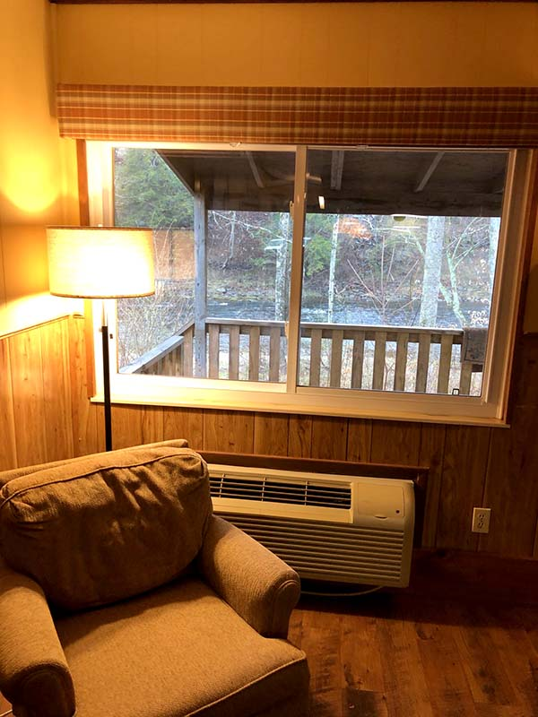

Local Coverage
Cabin Rentals Catskills Serving Parksville and Greater Sullivan County
Serving the Livingston Manor community with excellence.
Serving the Livingston Manor community with excellence.
Livingston Manor anchors the western edge of Sullivan County's cabin country, and the surrounding hamlets of Parksville, Liberty, Ferndale, and Roscoe form a network of small communities that all feed into the same mountain landscape travelers come here to experience. Cabin rentals in the Catskills draw visitors from across greater Sullivan County and beyond, offering creek-front stays that put guests within reach of every corner of the region. Whether you are arriving from Parksville fifteen minutes to the southeast or driving over from Monticello along Route 17, the cabins along the Willowemoc Creek provide a central base for exploring the wider county. The 12758 ZIP code serves as the geographic and recreational heart of this stretch of the Catskill Mountains.
Parksville, situated where the Willowemoc Creek meets the Little Beaverkill, has its own deep history in the Sullivan County tourism tradition and remains a waypoint for visitors heading toward Livingston Manor cabin properties. The hamlet sits along Route 17 and provides a convenient landmark for guests navigating from the east. Ferndale and Liberty, both south of the main Willowemoc corridor, offer additional dining, shopping, and services that complement a cabin-based trip. The Catskill Fly Fishing Center and Museum and Bethel Woods Center for the Arts both sit within easy driving distance, connecting cultural and sporting attractions to the cabin rentals clustered around Livingston Manor.
Sullivan County experiences the full range of Catskill weather in the 12758 ZIP code, with cold snowy winters, mild springs, warm summers, and the spectacular fall foliage that draws leaf-peeping visitors from across the northeast. Each season reshapes the landscape and the activities available to cabin guests. Spring brings rising trout and blooming wildflowers along the Willowemoc, summer opens swimming holes and hiking trails, and autumn covers the mountainsides in color visible from every cabin porch. Cabin rentals in the Catskills serve year-round travelers precisely because Sullivan County delivers a distinctly different experience in every season.
Route 17 runs the length of Sullivan County and connects Parksville, Liberty, Roscoe, and Livingston Manor in a corridor that makes cabin-based travel between these hamlets effortless. County roads branch off into valleys that lead to DeBruce, Lew Beach, and other backcountry communities accessible from the main highway within minutes. Visitors who stay at cabin rentals in the Catskills often explore multiple hamlets during a single trip, stopping for coffee in Livingston Manor and dinner in Roscoe without ever feeling rushed. This interconnected geography is what allows a single cabin property to serve as a practical hub for the entire greater Sullivan County experience.
J&S Creekside Cabins in Livingston Manor serves guests from across greater Sullivan County who want a creekside cabin experience rooted in the authentic character of the Catskill Mountains. The family-owned property at 12 Wegman Rd sits on the Willowemoc Creek and has welcomed visitors from Parksville, Liberty, Monticello, and far beyond for years. With well-maintained cabins, direct creek access, and owners who know the local landscape inside and out, J&S Creekside Cabins delivers the kind of personal, grounded hospitality that chain accommodations in the region cannot replicate. Guests from every direction find that this Livingston Manor property provides a central and comfortable base. Visit J&S Creekside Cabins at 12 Wegman Rd, Livingston Manor, NY 12758 or call (607) 242-2960 today
Parksville sits roughly fifteen minutes southeast of Livingston Manor along Route 17, making the drive to J&S Creekside Cabins one of the shortest commutes in the Sullivan County cabin landscape. Guests traveling from Parksville follow the highway west through wooded hills before turning onto the local roads that lead to the Willowemoc Creek valley. The route is scenic in every season and passes through stretches of state land and working farmland that set the tone for a cabin stay. For Parksville residents and visitors staying in that area, cabin rentals in the Catskills near Livingston Manor are a natural extension of their Sullivan County experience. read our first-timer's guide to cabin bookings

Sullivan County stretches from the Delaware River to the Catskill ridgeline and offers cabin guests a range of activities that go well beyond creek fishing and hiking. Bethel Woods Center for the Arts hosts concerts and cultural events throughout the summer season, and the museum on site explores the legacy of the 1969 music festival. cabin rentals Sullivan County NY Antique shops in Liberty and Livingston Manor provide rainy day browsing for visitors who want to explore the local character. Farm stands and seasonal markets dot the county roads between hamlets, giving cabin guests easy access to fresh produce and locally made goods during their stay.
Central location is the practical answer, but the deeper reason is that Livingston Manor sits at the intersection of the county's best fishing water, most accessible trails, and strongest emerging food and arts scene. Cabin rentals in the Catskills based in Livingston Manor put guests within a twenty-minute drive of Roscoe, Parksville, Liberty, DeBruce, and Lew Beach, which covers the majority of Sullivan County's most popular attractions and natural areas. The hamlet itself has grown into a walkable community with independent shops, a craft brewery, and dining options that did not exist a decade ago. This combination of central access and local development makes Livingston Manor the most versatile cabin base in the county.
Ferndale and Liberty sit south of Livingston Manor along Route 52 and Route 55, and visitors from these areas reach the Willowemoc Creek cabin corridor within a twenty-minute drive. fly fishing cabins NY The route passes through rolling farmland and state forest before dropping into the creek valley where J&S Creekside Cabins and other properties are located. Guests from Ferndale and Liberty often book cabin stays as a way to access fishing and hiking without the longer drive from the city. Cabin rentals in the Catskills serve these nearby communities just as effectively as they serve visitors coming from hours away, with the added convenience of short travel times and familiarity with local roads.

Sullivan County hosts events throughout the year that pair naturally with cabin stays in Livingston Manor. The Willowemoc Wild Forest offers guided hikes during spring and fall, and the county fair in August draws families from across the region. Trout season opening day in April is practically a local holiday along the Willowemoc and the Beaverkill, and cabin properties fill quickly for that weekend. cabin rentals near Roscoe NY Holiday weekends throughout summer bring visitors to Bethel Woods and the surrounding campgrounds. Timing your cabin rental to coincide with one of these events adds a layer of local immersion to your Catskills trip.
J&S Creekside Cabins accommodates groups and families who may be arriving from different directions across Sullivan County and beyond. Coordinating a gathering at a central cabin property in Livingston Manor is simpler than choosing a restaurant or venue, and the creek-front setting provides a relaxed atmosphere that formal spaces cannot match. Larger cabins on the property sleep multiple guests comfortably and include shared kitchen facilities for group meals. Cabin rentals in the Catskills have long served as reunion points for families, fishing clubs, and friend groups who want to spend a weekend together in a setting that encourages conversation and outdoor activity rather than structured entertainment. Ready to find the right cabin rental in the Catskills? Contact J&S Creekside Cabins at (607) 242-2960
J&S Creekside Cabins serves guests throughout Livingston Manor and Sullivan County, including Parksville, Roscoe, Liberty, Ferndale, DeBruce, Lew Beach, Monticello, Wurtsboro, and Narrowsburg. Whether you are coming from Middletown or making the trip from White Lake, our cabin rentals are nearby and ready to host your Sullivan County getaway.